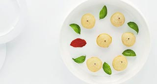

MiniPizza frita: Tomate, Albahaca y Mozzarella. Tomate, Mató y Anchoas
"Tomate, Mozzarella, Albahaca, Mató, Anchoas"

| Masa para pizza | |
|---|---|
| Harina de fuerza | 300 gr. |
| Levadura | 12 gr. |
| Agua mineral | 150 ml. |
| Aceite de oliva | 1 c.s. |
| Sal | 5 gr. |
| Fondo de tomate | |
| Tomate maduro | 8 un. |
| AOVE | 40 ml. |
| Azúcar | 1 c.m. |
| Sal | 1 c.m. |
| Relleno | |
| Mozzarella | 120 gr. |
| Albahaca | 8 hj. |
| Mató | 120 gr. |
| Anchoas | 8 un. |
| Aceite de girasol | 1 l. |
| Flor se sal | 2 gr. |
-
Masa de pizza
- Tamizar la harina y colocarla en un bol.
- Templar el agua y disolver en élla la levadura.
- Mezclar todos los ingredientes y amasar durante unos 15 min.
- Colocar en un bol engrasado, taparlo Y dejar que doble su volumen.
- Una vez hinchada la masa, volcarla sobre la mesa de trabajo enharinada y estirarla con la ayuda de un rodillo a un grosor de 2 mm.
- Cortar círculos de 5/6 cm. y dejar reposar tapado en el frigo. Fondo de tomate
- Sumergir los tomates 15 seg. en agua hirviendo retírar y sumergir en agua helada para detener la cocción.
- Escurrir, pelar, retirar las semillas y picar a cuchillo la pulpa.
- Calentar el aceite en una sartén, una vez caliente añadir el tomate, la sal y el azúcar.
- Dejar cocer a fuego muy lento hasta que el tomate esté muy confitado. Rectificar de sal.
- Retírar, colocar en un bol y dejar enfriar. Relleno
- Cortar la Mozzarella a trocitos pequeños.
- Desmenuzar el Mató.
- Lavar las hojas de albahaca.
- Partir las anchoas por la mitad. Acabado/Presentación
- Pintar el borde de cuatro círculos de pasta con un poco de agua.
- En la primera colocar un poco de tomate, mozzarella y una hoja de albahaca.
- Cubrir con el otro círculo y sellar los bordes apretando ligeramente.
- En la segunda colocar un poco de tomate, el mató y una mitad de anchoa. Seguir el procedimiento anterior de sellado.
- Calentar el aceite a 160º e ir añadiendo las pizzas dejando que se hinchen y se doren ligeramente.
- Retírar del aceite, secar en papel absorbente y espolvorear con un poco de flor de sal.
- Servir inmediatamente.